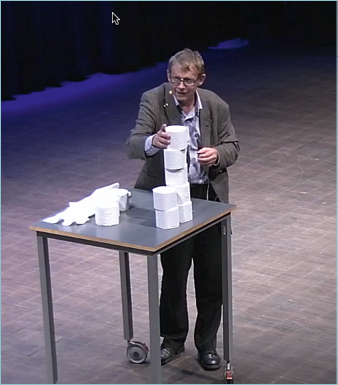

Moniulotteisen datan analysointi on vaikeaa. Varsinkin taulukkomuotoinen numerodata on ihmisen tiedonkäsittelyjärjestelmälle kova pala purtavaksi. Yleiskuvan muodostamista helpottaa, kun aineisto visualisoidaan graafiseen muotoon.
HRI:n sovellusgalleriassa on esimerkkejä avoimia datalähteitä hyödyntävistä visualisoinneista, jotka kertovat enemmän kuin tuhat sanaa. Myös Apps4Finland -kilpailussa on alusta alkaen palkittu parhaita datavisualisointeja.
Visualisointiblogi
HRI:n visualisointiblogi on täynnä esimerkkejä tiedon visualisoinneista, visualisointityökaluista ja -menetelmistä.

http://www.hri.fi/fi/category/ajankohtaista/visualisointiblogi/
Hans Rosling
Syyskuussa 2012 Helsingissä järjestetyn Open Knowledge Festivalin tapaus oli ruotsalaisprofessori Hans Roslingin luento. Datavisualisointivelho Rosling havainnollisti wc-paperirullilla, miksi maailman väestö kasvaa vielä vuosikymmeniä, vaikka syntyvyys on alentunut roimasti.

Ilmanlaatu
Tietotekniikka on avannut visualisoijille aivan uusia mahdollisuuksia.
Apps4Finland -kilpailun visualisointisarjan vuoden 2012 voittaja näyttää ajantasaisen ilmanlaatuindeksin puhelimen taustavärinä.
Florence Nightingalen infografiikka vuodelta 1855
Informaatiota on jo luolamaalauksista lähtien välitetty kuvina. Klassinen esimerkki hyvästä numerotiedon visualisoinnista on nykyaikaisen sairaanhoidon esikuvaksi nousseen Florence Nightingalen piirtämä havainnollistus vuoden 1855 Krimin sodassa kuolleista.
{kind=link}
Hygienian tärkeyttä alleviivannut graafi kertoi järisyttävän havainnon. Sotilaat kuolivat seitsemän kertaa todennäköisemmin sairaaloissa leviäviin tauteihin kuin ampumahaavoihin.
http:// http://en.wikipedia.org/wiki/File:Nightingale-mortality.jpg
Twiittaa{kind=link}
•
Teoksen tekstit on lisensoitu HRI-nimeä -lisenssillä. Teoksen uudelleenkäytön yhteydessä pitää mainita sekä tekstin kirjoittaja (Petja Partanen tai Terhi Upola) että rahoittaja (Helsinki Region Infoshare -palvelu).
HSL rakentaa joukkoliikennenavigaattoria talkoovoimin
Datan avauksen pioneeri kokeilee omaa ohjelmistokehitystä Open Source -opein.
Helsingin seudun liikenne HSL on datan avaamisen pioneeri Helsingin seudulla. Nyt HSL kokeilee myös omaa ohjelmistokehitystä. Avuksi on pestattu sovelluskehittäjä Tuukka Hastrup, joka tuntee open source -maailman.
HSL:n kumppanikoodari Tuukka Hastrupin tärkein kehitysprojekti on uudenlainen navigaattoriohjelmisto joukkoliikenteen käyttäjille. Autoilijoiden elämää helpottava, käännös käännökseltä neuvova navigaattorisovellus, on tarkoitus tuoda myös joukkoliikennematkustajien ulottuville.
“Sovellus neuvoo, millä pysäkillä pitää vaihtaa bussia, ja lähdetäänkö pysäkiltä oikealle vai vasemmalle”, Hastrup kuvailee.
Joukkoliikennenavigaattorin koodi julkaistaan avoimena kaikkien käyttöön, ja HSL:n avoimen aikatauludatan hyödyntäjiä innostetaan mukaan kehitystyöhön.
“Tällaisessa hankkeessa olisi isot riskit ja rahaa palaisi, jos sitä lähdettäisiin toteuttamaan perinteisillä hankintatavoilla”, Hastrup arvioi.
Hastrup toivoo, että hän pystyy auttamaan työnantajaansa myös muissa it-hankinnoissa. Kun osaa itse kehittää ohjelmistoja, voi välttää kalliiksi tulevia sudenkuoppia.
Code for Europe
Code for Europe -hankkeen kumppanikoodaajat kehittävät sähköisiä palveluja kaupunkilaisille Helsingin lisäksi viidessä muussa eurooppalaisessa kaupungissa - Amsterdamissa, Barcelonassa, Berliinissä, Manchesterissa ja Roomassa. http://codeforeurope.net/
Helsingin Code4EU-koodaajat Tuukka Hastrup (vas.) ja Juha Yrjölä päättivät tehdä päivän viikossa toistensa projekteja saman pöydän ääressä. “Kahden ukon tiimi on jo paljon enemmän kuin yhden”, Yrjölä toteaa.